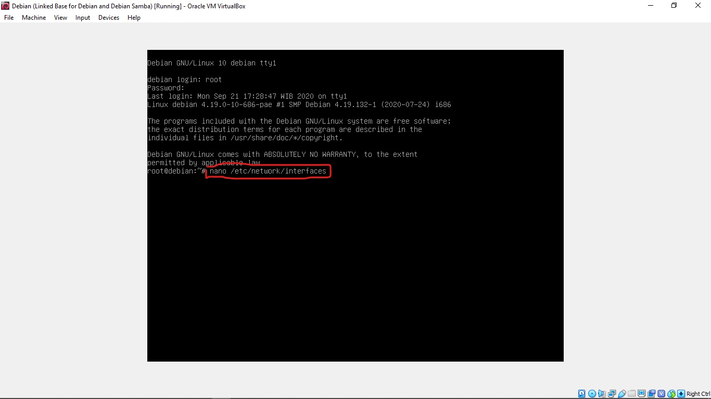

Apa Itu Samba Server?
Samba Server adalah software yang ada pada sistem operasi linux yang bisa digunakan untuk melakukan sharing file dan printer pada jaringan yang menggunakan system operasi windows dan linux. Nama samba diambil dari SMB yaitu sebuah protocol yang mengatur metode sharing file dan printer pada windows.
Proses Konfigurasi Samba Server Debian 10:
1. Login menggunakan User root
2. Konfigurasi IP address terlebih dahulu dengan mengetikkanperintah nano /etc/network/interfaces
3. Setelah masuk ke konfigurasinya, buatlah konfigurasi seperti gambar di bawah ini. Setelah selesai konfigurasi simpan dengan menekan tombol Ctrl + O dan keluar dari konfigurasi dengan menekan tombol Ctrl + X.
4. Sebelum menginstall samba pastikan terlebih dahulu repository mengarah ke DVD binary 1. Cara memasukkan DVD binary 1 yaitu pilih icon cd yang berada di bagian bawah kanan.
5. Setelah menemukan icon cd tersebut kemudian klik kanan dan masukkan DVD Debian binary 1.
5. Jika ada notifikasi seperti di bawah ini, klik saja Force Unmount.
6. Kemudian kita install samba dengan mengetikkan perintah apt-get install samba . Jika ada pertanyaan "y/n" klik "y" kemudian enter.
7. Pada samba server and utilities, pilih no.
8. Jika sudah selesai menginstall samba, ulangi perintah apt-get install samba untuk memastikan apakah samba sudah berhasil terinstall atau belum, jika sudah maka akan ada tulisan 0 upgrade, 0 newly installed, 0 to remove and 0 not upgrade.
9. Buat folder yang akan di share dan atur juga hak aksesnya. Misalnya disini saya akan membuat folder dengan nama "Sharing"
10. Setelah membuat direktori baru, kemudian masuk ke konfigurasi dengan mengetikkan perintah
11. Kemudian setelah masuk ke konfigurasi, scroll kebawah dengan menekan tombol page down.Dan tuliskan konfigurasi berikut pada bagian yang paling bawah.
jika sudah selesai, tekan tombol "Ctrl + X" jika ada pertanyaan y/n tekan "y" kemudian enter
Penjelasan:
12. Setelah selesai konfigurasi jangan lupa untuk me-restart samba, dengan mengetikan perintah
13. Selanjutnya bisa kita cek pada komputer client, tetapi sebelumnya kita harus setting IP address pada komputer client.
14. Kemudian akses file sharing dari server dengan tekan tombol windows+R, kemudian masukkan ip server \\192.168.10.1

15. Bisa kita lihat bahwa folder yang kita sharing tadi sudah muncul. Itu artinya konfigurasi samba server telah berhasil kita lakukan.
Sekian tutorial dari saya semoga bermanfaat, dan terimakasih telah berkunjung di blog saya dan jangan lupa kunjungi terus blog saya untuk mendapatkan informasi-informasi yang lebih bagus lagi dan lebih bermanfaat.......